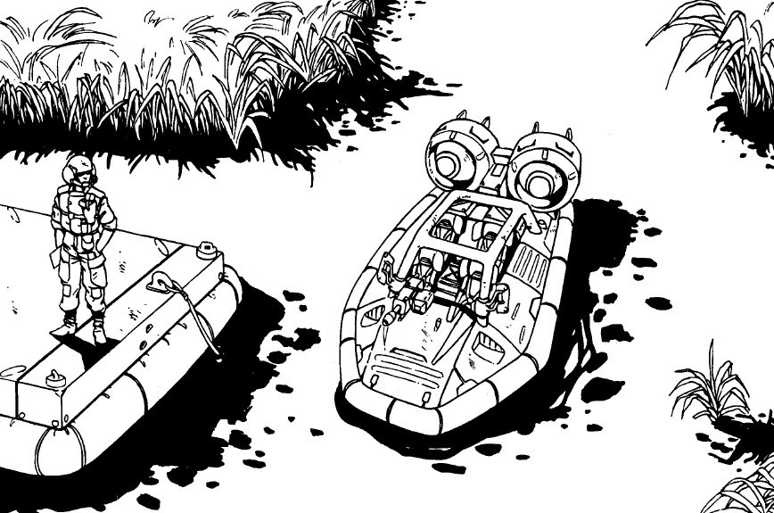
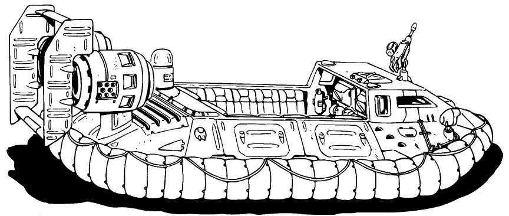
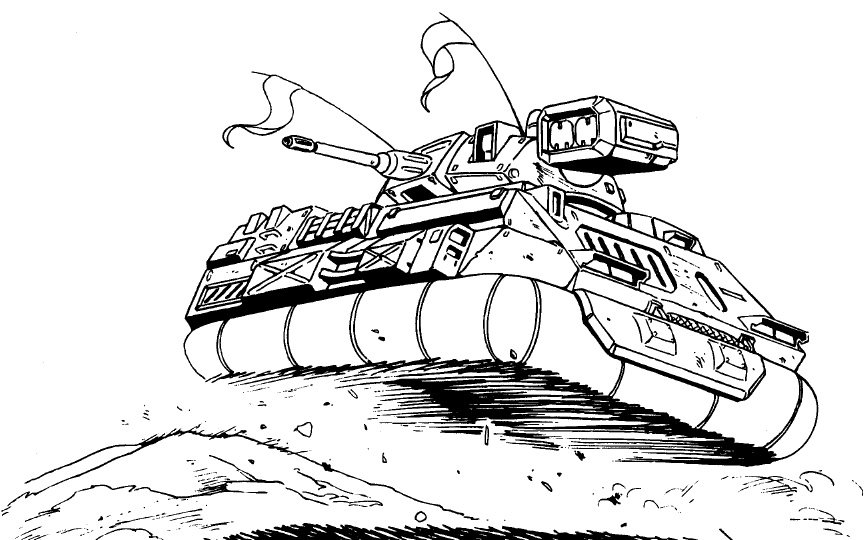

Hovercraft have their uses. They're faster than anything else on the ground (except rockets and dragsters) and they have no problems with land/water interface, since they can drive right off the water and right onto the beach. Militarily, that ends their usefulness, they can't traverse wooded or rough terrain, their lack of manoeuvrability makes trucks look graceful, they're too lightweight to haul much armor or weaponry, they eat a lot of fuel, and they make a lot of noise. In addition, in dusty conditions, a hover kicks up a lot of dust; you can see it miles off. The same wind blast makes smoke dispensers useless with hovers.
"Panzers", armored fast hovercraft, are popular with some mercenary units and smugglers. Introduced by the Navy as hovercraft gunships, they accompanied the Marine Corps landing hovers onto the beach and inland to provide some fire support. Off the beach, their abilities became apparent, and when the military was reduced in force, a lot of panzers were dropped with them. Many of them went to National Guard and Coast Guard units, where they served well in the Gulf of Mexico and on the Mississippi.
| GEB Duster | ||
|  | ||
|
||
| A small hover, the basic Duster (unarmored, without the pintle mount) is a pleasure watercraft on the civilian market. The military Duster is more of a hoverjeep than an armored vehicle, but it serves a great many corporations as a maritime patrol craft; the hovercraft equivalent of the Arasaka-Mitsubishi Kuma. Special Equipment : |
| GMI Hovertruck | ||
|  | ||
|
||
| A variant of the U.S.M.C. APC, the hovertruck has been refitted to serve as a combination troop/cargo vehicle. Special Equipment : Weaponry : |
| Militech A-20 ACAV | ||
|  | ||
|
||
| The "Panzer" made famous by Combat Cabband numerous movies, the A-20 sheds the varied armament of the original Navy model, but is otherwise very similar to the one the Navy still has in service. Like the Arasaka APCs, it's really too lightly armored to slug it out with the Big Boys. The panzer hopes to strike fast with its missiles and cut out before the enemy can respond. Special Equipment : Weaponry : |